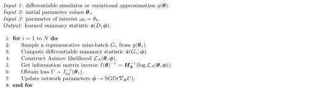

6.3 Method
In this section, a machine learning technique to learn non-linear sample summary statistics is described in detail. The method seeks to minimise the expected variance of the parameters of interest obtained via a non-parametric simulation-based synthetic likelihood. A graphical description of the technique is depicted on Fig. 6.1. The parameters of a neural network are optimised by stochastic gradient descent within an automatic differentiation framework, where the considered loss function accounts for the details of the statistical model as well as the expected effect of nuisance parameters.
Figure 6.1: Learning inference-aware summary statistics (see text for details).
The family of summary statistics \(\boldsymbol{s}(D)\) considered in this work is based on a neural network model applied to each dataset observation \(\boldsymbol{f}(\boldsymbol{x}; \boldsymbol{\phi}) : \mathcal{X} \subseteq \mathbb{R}^{d} \rightarrow \mathcal{Y} \subseteq \mathbb{R}^{b}\), whose parameters \(\boldsymbol{\phi}\) will be learned during training by means of stochastic gradient descent, as will be discussed later. Therefore, using set-builder notation the considered family of summary statistics considered can be denoted as: \[ \boldsymbol{s} (D, \boldsymbol{\phi}) = \boldsymbol{s} \left ( \: \{ \: \boldsymbol{f}(\boldsymbol{x}_i; \boldsymbol{\phi}) \: | \: \forall \: \boldsymbol{x}_i \in D \: \} \: \right ) \qquad(6.3)\] where \(\boldsymbol{f}(\boldsymbol{x}_i; \boldsymbol{\phi})\) will reduce the dimensionality from the input observations space \(\mathcal{X}\) to a lower-dimensional space \(\mathcal{Y}\). The next step is to map observation outputs to a dataset summary statistic, which will in turn be calibrated and optimised via a non-parametric likelihood \(\mathcal{L}(D; \boldsymbol{\theta},\boldsymbol{\phi})\) created using a set of simulated observations \(G_s= \{\boldsymbol{x}_0,...,\boldsymbol{x}_g\}\), generated at a certain instantiation of the simulator parameters \(\boldsymbol{\theta}_s\).
In experimental high energy physics experiments, which are the scientific context that initially motivated this work, histograms of observation counts are the most commonly used non-parametric density estimator because the resulting likelihoods can be expressed as the product of Poisson factors, one for each of the considered bins. A naive sample summary statistic can be built from the output of the neural network by simply assigning each observation \(\boldsymbol{x}\) to a bin corresponding to the cardinality of the maximum element of \(\boldsymbol{f}(\boldsymbol{x}; \boldsymbol{\phi})\), so each element of the sample summary will correspond to the following sum: \[ s_i(D;\boldsymbol{\phi})=\sum_{\boldsymbol{x} \in D} \begin{cases} 1 & i = {argmax}_{j=\{0,...,b\}} (f_j(\boldsymbol{x}; \boldsymbol{\phi})) \\ 0 & i \neq {argmax}_{j=\{0,...,b\}} (f_j(\boldsymbol{x}; \boldsymbol{\phi})) \\ \end{cases} \qquad(6.4)\] which can in turn be used to build the following likelihood, where the expectation for each bin is taken from the simulated sample \(G_s\): \[ \mathcal{L}(D; \boldsymbol{\theta},\boldsymbol{\phi})=\prod_{i=0 }^b \textrm{Pois} \left ( s_i (D; \boldsymbol{\phi}) \: | \: \left ( \frac{n}{g} \right ) s_i (G_s;\boldsymbol{\phi}) \right ) \qquad(6.5)\] where the \(n/g\) factor accounts for the different number of observations in the simulated samples. In cases where the number of observations is itself a random variable providing information about the parameters of interest, or where the simulated observations are weighted, the choice of normalisation of \(\mathcal{L}\) may be slightly more involved and problem specific, but nevertheless amenable. Note the relation between the summary statistics and likelihoods defined in this section and those discussed in Section 3.1.3.
In the above construction, the chosen family of summary statistics is not differentiable due to the \(argmax\) operator, so gradient-based updates for the parameters cannot be computed. To work around this problem, a differentiable approximation \(\hat{\boldsymbol{s}}(D ; \boldsymbol{\phi})\) is considered. This function is defined by means of a \(softmax\) operator: \[ \hat{s}_i(D;\boldsymbol{\phi})=\sum_{x \in D} \frac{e^{f_i(\boldsymbol{x}; \boldsymbol{\phi})/\tau}} {\sum_{j=0}^{b} e^{f_j(\boldsymbol{x}; \boldsymbol{\phi})/\tau}} \qquad(6.6)\] where the temperature hyper-parameter \(\tau\) will regulate the softness of the operator. In the limit of \(\tau \rightarrow 0^{+}\), the probability of the largest component will tend to 1 while others to 0, and therefore \(\hat{\boldsymbol{s}}(D ; \boldsymbol{\phi}) \rightarrow \boldsymbol{s}(D; \boldsymbol{\phi})\). Similarly, let us denote by \(\hat{\mathcal{L}}(D; \boldsymbol{\theta}, \boldsymbol{\phi})\) the differentiable approximation of the non-parametric likelihood obtained by substituting \(\boldsymbol{s}(D ; \boldsymbol{\phi})\) with \(\hat{\boldsymbol{s}}(D ; \boldsymbol{\phi})\). Instead of using the observed data \(D\), the value of \(\hat{\mathcal{L}}\) may be computed when the observation for each bin is equal to its corresponding expectation based on the simulated sample \(G_s\), which is commonly denoted as the Asimov likelihood [100] \(\hat{\mathcal{L}}_A\): \[ \hat{\mathcal{L}}_A(\boldsymbol{\theta}; \boldsymbol{\phi})=\prod_{i=0 }^b \textrm{Pois} \left ( \left ( \frac{n}{g} \right ) \hat{s}_i (G_s;\boldsymbol{\phi}) \: | \: \left ( \frac{n}{g} \right ) \hat{s}_i (G_s;\boldsymbol{\phi}) \right ) \qquad(6.7)\] for which it can be easily proven that \(argmax_{\boldsymbol{\theta} \in \mathcal{\theta}} (\hat{\mathcal{L}}_A( \boldsymbol{\theta; \boldsymbol{\phi}})) = \boldsymbol{\theta}_s\), so the maximum likelihood estimator (MLE) for the Asimov likelihood is the parameter vector \(\boldsymbol{\theta}_s\) used to generate the simulated dataset \(G_s\). In Bayesian terms, if the prior over the parameters is flat in the chosen metric, then \(\boldsymbol{\theta}_s\) is also the maximum a posteriori (MAP) estimator. By taking the negative logarithm and expanding in \(\boldsymbol{\theta}\) around \(\boldsymbol{\theta}_s\), we may obtain the Fisher information matrix [107] for the Asimov likelihood: \[ {\boldsymbol{I}(\boldsymbol{\theta})}_{ij} = \frac{\partial^2}{\partial {\theta_i} \partial {\theta_j}} \left ( - \log \mathcal{\hat{L}}_A(\boldsymbol{\theta}; \boldsymbol{\phi}) \right ) \qquad(6.8)\] which can be computed via automatic differentiation if the simulation is differentiable and included in the computation graph, or if the effect of varying \(\boldsymbol{\theta}\) over the simulated dataset \(G_s\) can be effectively approximated. While this requirement does constrain the applicability of the proposed technique to a subset of likelihood-free inference problems, it is quite common in e.g. physical sciences that the effect of the parameters of interest and the main nuisance parameters over a sample can be approximated by the changes of mixture coefficients of mixture models, translations of a subset of features, or conditional density ratio re-weighting.
If \(\hat{\boldsymbol{\theta}}\) is an unbiased estimator of the values of \(\boldsymbol{\theta}\), the covariance matrix fulfils the Cramér-Rao lower bound [108], [109]: \[ \textrm{cov}_{\boldsymbol{\theta}}(\hat{\boldsymbol{\theta}}) \geq I(\boldsymbol{\theta})^{-1} \qquad(6.9)\] and the inverse of the Fisher information can be used as an approximate estimator of the expected variance, given that the bound would become an equality in the asymptotic limit for MLE. If some of the parameters \(\boldsymbol{\theta}\) are constrained by independent measurements characterised by their likelihoods \(\{\mathcal{L}_C^{0}(\boldsymbol{\theta}), ..., \mathcal{L}_{C}^{c}(\boldsymbol{\theta})\}\), those constraints can also be easily included in the covariance estimation, simply by considering the augmented likelihood \(\hat{\mathcal{L}}_A'\) instead of \(\hat{\mathcal{L}}_A\) in Eq. 6.8: \[\hat{\mathcal{L}}_A'(\boldsymbol{\theta} ; \boldsymbol{\phi}) = \hat{\mathcal{L}}_A(\boldsymbol{\theta} ; \boldsymbol{\phi}) \prod_{i=0}^{c}\mathcal{L}_C^i(\boldsymbol{\theta}).\qquad(6.10)\] In Bayesian terminology, this approach is referred to as the Laplace approximation [110] where the logarithm of the joint density (including the priors) is expanded around the MAP to a multi-dimensional normal approximation of the posterior density: \[ p(\boldsymbol{\theta}|D) \approx \textrm{Normal}( \boldsymbol{\theta} ; \hat{\boldsymbol{\theta}}, I(\hat{\boldsymbol{\theta})}^{-1} ) \qquad(6.11)\] which has already been approached by automatic differentiation in probabilistic programming frameworks [192]. While a histogram has been used to construct a Poisson count sample likelihood, non-parametric density estimation techniques can be used in its place to construct a product of observation likelihoods based on the neural network output \(\boldsymbol{f}(\boldsymbol{x}; \boldsymbol{\phi})\) instead. For example, an extension of this technique to use kernel density estimation (KDE) should be straightforward, given its intrinsic differentiability.
The loss function used for stochastic optimisation of the neural network parameters \(\boldsymbol{\phi}\) can be any function of the inverse of the Fisher information matrix at \(\boldsymbol{\theta}_s\), depending on the ultimate inference aim. The diagonal elements \(I_{ii}^{-1}(\boldsymbol{\theta}_s)\) correspond to the expected variance of each of the \(\phi_i\) under the normal approximation mentioned before, so if the aim is efficient inference about one of the parameters \(\omega_0 = \theta_k\) a candidate loss function is: \[ U = I_{kk}^{-1}(\boldsymbol{\theta}_s) \qquad(6.12)\] which corresponds to the expected width of the confidence interval for \(\omega_0\) accounting also for the effect of the other nuisance parameters in \(\boldsymbol{\theta}\). This approach can also be extended when the goal is inference over several parameters of interest \(\boldsymbol{\omega} \subseteq \boldsymbol{\theta}\) (e.g. when considering a weighted sum of the relevant variances). A simple version of the approach just described to learn a neural-network based summary statistic employing an inference-aware loss is summarised in Algorithm 1.
Algorithm 1: Inference-Aware Neural Optimisation.
